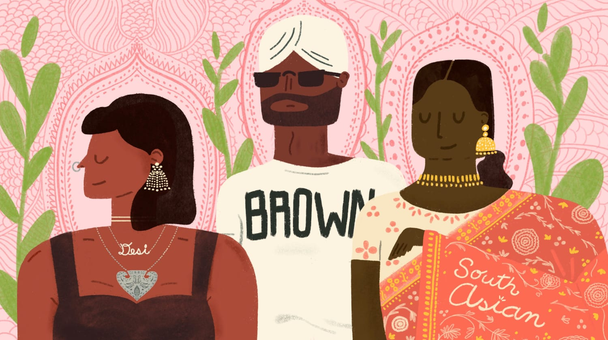

What is Mental Health Stigma in Desi Communities?
We explore what stigma really means, where it comes from, and why silence has become the default response to struggle in many South Asian households.
A school campaign for awareness, care, and change
Breaking the silence around mental health in South Asian and immigrant communities.
South Asians in Canada are reported to be less likely to seek mental health treatment compared to the general population.
CAMH and Mental Health Commission of Canada, 2023Mission statement
Mental health is not talked about enough in many of our communities. Desi Mind Matters challenges the stigma surrounding mental health in South Asian and immigrant households. Through research, conversation, and local support, this campaign works to make seeking help feel less like shame and more like strength.

Why this matters
School, work, money stress, migration, language barriers, family expectations, and fear of judgment can all affect mental health. When a community treats struggle as weakness, people may wait longer before asking for help. This website is meant to start conversations earlier.
Podcast
Three episodes. Real conversations. Real research.
We explore what stigma really means, where it comes from, and why silence has become the default response to struggle in many South Asian households.
Breaking down the most common cultural myths about mental health, and what the research actually says.
Real, local, accessible resources for anyone ready to take the next step.
Myths vs facts
Common beliefs about mental health in our communities, and what the research actually shows. Tap a card to reveal the truth.
Support
Free, confidential, and local support for our community.
Call or text 988, Suicide Crisis Helpline, available 24/7 across Canada. You do not have to be in crisis to call. You just have to be struggling.
Free, confidential mental health case management for South Asian, newcomer, and Muslim individuals ages 16+ living in Halton Region.
Visit pchs4u.comCulturally and linguistically appropriate mental health and addiction counselling.
Phone: (647) 718-0786
Child and Adolescent Mental Health Services offer assessment and short term treatment for children and youth experiencing mental health concerns.
Visit Halton HealthcareSocial justice action
This campaign is designed to educate young people, challenge stigma, and connect community members to help. A website and podcast work together because one gives people information, while the other makes the issue feel human.
About this campaign
“Growing up, I have seen how the people around me carry heavy things in silence.”
Desi Mind Matters is a school project made by Karan Gill. While it is a school project, it means a lot more than just a topic.
Growing up, I have seen how the people around me carry heavy things in silence. How “we do not talk about that” becomes the answer to things that desperately need to be talked about. How asking for help can feel like betrayal, even when it is actually survival.
This campaign exists because I believe our communities deserve better. Better conversations, better access, and better understanding. Mental health struggles are not a failure of character. They are human. They deserve care, not silence.
You reading this message and viewing this webpage already means a lot. Thank you for being here.